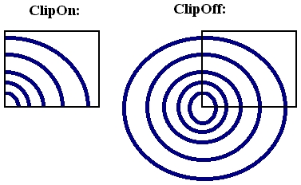
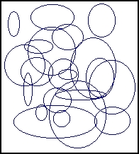
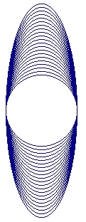

|
|
|
|
Координаты, окна, страницы
Многие графические процедуры и функции используют указатель текущей позиции на экране, который в отличие от текстового курсора невидим. Положение этого указателя, как и вообще любая координата на графическом экране, задается относительно левого верхнего угла, который, в свою очередь, имеет координаты 0,0. Таким образом, горизонтальная координата экрана увеличивается слева направо, а вертикальная - сверху вниз.
Функции GetMaxX и GetMaxY.
Возвращают значения типа Word, содержащие максимальные координаты экрана в текущем режиме работы соответственно по горизонтали и вертикали. Например:
Uses Graph;
var
a,b: Integer;
begin
a := Detect; InitGraph(a, b, '');
WriteLn(GetMaxX, GetMaxY:5);
ReadLn;
CloseGraph
end.
Функции GetX и GetY.
Возвращают значения типа Integer, содержащие текущие координаты указателя соответственно по горизонтали и вертикали. Координаты определяются относительно левого верхнего угла окна или, если окно не установлено, экрана.
Процедура SetViewPort.
Устанавливает прямоугольное окно на графическом экране. Заголовок:
Procedure SetViewPort(XI,Y1,X2,Y2: Integer; ClipOn: Boolean);
Здесь X1...Y2 - координаты левого верхнего (XI,Y1) и правого нижнего (X2,Y2) углов окна; СНрОп - выражение типа Boolean, определяющее «отсечку» не умещающихся в окне элементов изображения.
Координаты окна всегда задаются относительно левого верхнего угла экрана. Если параметр ClipOn имеет значение True, элементы изображения, не умещающиеся в пределах окна, отсекаются, в противном случае границы окна игнорируются. Для управления этим параметром можно использовать такие определенные в модуле константы:
const
ClipOn = True; {Включить отсечку}
ClipOff = False; {He включать отсечку}
Следующий пример иллюстрирует действие параметра СНрОп. Программа строит два прямоугольных окна с разными значениями параметра и выводит в них несколько окружностей. Для большей наглядности окна обводятся рамками (см. рис. 14.1).

Рис. 14.1. Отсечка изображения в окне
Uses Graph,CRT;
var
x,y,e: Integer;
xll,yll,xl2,yl2, {Координаты 1-го окна}
x21,x22, {Левый верхний угол 2-го}
R, {Начальный радиус}
k: Integer;
begin
DirectVideo := False {Блокируем прямой доступ к видеопамяти в модуле CRT}
{Инициируем графический режим}
х := Detect; InitGraph(x, у, '');
{Проверяем результат}
е := GraphResult; if e <> grOk then
WriteLn(GraphErrorMsg (e) ) {Ошибка}
else
begin {Нет ошибки}
{Вычисляем координаты с учетом разрешения экрана}
x11:=GetMaxX div 60;
x12:=GetMaxX div 3;
y11:=GetMaxY div 4; y12:=2*y11;
R:=(x12-x11) div 4; x21:=x12*2;
x22:=x21+x12-x11;
{Рисуем окна}
WriteLnt'ClipOn:':10,'ClipOff:':40);
Rectangle(x11, y11, x12, y12); Rectangle(x21, y11 x22, y12);
{Назначаем 1-е окно и рисуем четыре окружности}
SetViewPort(x11, y11, x12, y12, ClipOn);
for k := 1 to 4 do
Circle(0,y11,R*k);
{Назначаем 2-е окно и рисуем окружности}
SetViewPort(x21, y11, x22, y12, ClipOff);
for k := 1 to 4 do
Circle(0,y11,R*k);
{Ждем нажатия любой клавиши}
if ReadKey=#0 then k := ord(ReadKey);
CloseGraph
end
end.
Процедура GetViewSettings.
Возвращает координаты и признак отсечки текущего графического окна. Заголовок:
Procedure GetViewSettings(var Viewlnfo: ViewPortType);
Здесь Viewlnfo - переменная типа ViewPortType. Этот тип в модуле Graph определен следующим образом:
type
ViewPortType = record
x1,y1,x2,y2: Integer; {Координаты окна}
Clip : Boolean {Признак отсечки}
end ;
Процедура MoveTo.
Устанавливает новое текущее положение указателя. Заголовок:
Procedure MoveTo(X,Y: integer);
Здесь X, Y - новые координаты указателя соответственно по горизонтали и вертикали.
Координаты определяются относительно левого верхнего угла окна или, если окно не установлено, экрана.
Процедура MoveRel.
Устанавливает новое положение указателя в относительных координатах.
Procedure MoveRel(DX,DY: Integer);
Здесь DX.DY- приращения новых координат указателя соответственно по горизонтали и вертикали.
Приращения задаются относительно того положения, которое занимал указатель к моменту обращения к процедуре.
Процедура ClearDevice.
Очищает графический экран. После обращения к процедуре указатель устанавливается в левый верхний угол экрана, а сам экран заполняется цветом фона, заданным процедурой SetBkColor. Заголовок:
Procedure ClearDevice;
Процедура ClearViewPort.
Очищает графическое окно, а если окно не определено к этому моменту - весь экран. При очистке окно заполняется цветом с номером О из текущей палитры. Указатель перемещается в левый верхний угол окна. Заголовок:
Procedure ClearViewPort;
В следующей программе на экране создается окно, которое затем заполняется случайными окружностями (рис. 14.2). После нажатия на любую клавишу окно очищается. Для выхода из программы нажмите Enter.

Рис. 14.2. Окно со случайными окружностями
Uses CRT,Graph;
var
x1,y1,x2,y2,Err: Integer;
begin
{Инициируем графический режим}
xl := Detect; InitGraph(xl,x2,'');
Err := GraphResult; if ErrogrOk then
WriteLn(GraphErrorMsg(Err))
else
begin
{Определяем координаты окна с учетом разрешения экрана}
x1 := GetMaxX div 4,-y1 := GetMaxY div 4;
x2 := 3*x1; y2 := 3*y1;
{Создаем окно}
Rectangle(x1,y1,x2,y2);
SetViewPort(x1+1,y1+1,x2-1,y2-1,ClipOn);
{Заполняем окно случайными окружностями}
repeat
Сirclе(Random(Ge tMaxX),Random(Ge tMaxX)
Random(GetMaxX div 5))
until KeyPressed;
{Очищаем окно и ждем нажатия Enter}
ClearViewPort;
OutTextXY(0,0,'Press Enter...1);
ReadLn;
CloseGraph
end
end.
Процедура GetAspectRatio.
Возвращает два числа, позволяющие оценить соотношение сторон экрана. Заголовок:
Procedure GetAspectRatio(var X,Y: Word);
Здесь X, Y - переменные типа Word. Значения, возвращаемые в этих переменных, позволяют вычислить отношение сторон графического экрана в пикселях. Найденный с их помощью коэффициент может использоваться при построении правильных геометрических фигур, таких как окружности, квадраты и т.п. Например, если Вы хотите построить квадрат со стороной L пикселей по вертикали, Вы должны использовать операторы
GetAspectRatio (Xasp, Yasp);
Rectangle(x1, y1, x1+L*round (Yasp/Xasp), y1+L);
а если L определяет длину квадрата по горизонтали, то используется оператор
Rectangle (x1,y1,x1+L,y1+L*round(Xasp/Yasp));
Процедура SetAspectRatio.
Устанавливает масштабный коэффициент отношения сторон графического экрана. Заголовок:
Procedure SetAspectRatio(X,Y: Word);
Здесь X, Y- устанавливаемые соотношения сторон.
Следующая программа строит 20 окружностей с разными соотношениями сторон экрана (рис. 14.3).

Рис.14.3. Окружности при разных отношениях сторон экрана
Uses Graph,CRT;
const
R =.50;
dx = 1000;
var
d,m,e,k : Integer;
Xasp,Yasp: Word;
begin
d := Detect;
InitGraph(d, m,.'');
e : = GraphResult;
if e <> grOk then
WriteLn(GraphErrorMsg(e))
else
begin
GetAspectRatio(Xasp, Yasp);
for k := 0 to 20 do
begin
SetAspectRatio(Xasp+k*dx,Yasp);
Circle(GetMaxX div 2,GetMaxY div 2,R)
end;
if ReadKey=#0 then k := ord(ReadKey);
CloseGraph
end
end.
Процедура SetActivePage.
Делает активной указанную страницу видеопамяти. Заголовок:
Procedure SetActivePage(PageNum: Word);
Здесь PageNum - номер страницы.
Процедура может использоваться только с адаптерами, поддерживающими многостраничную работу (EGA, VGA и т.п.). Фактически процедура просто переадресует графический вывод в другую область видеопамяти, однако вывод текстов с помощью Write/WriteLn всегда осуществляется только на страницу, которая является видимой в данный момент (активная страница может быть невидимой). Нумерация страниц начинается с нуля.
Процедура SetVisualPage.
Делает видимой страницу с указанным номером. Обращение:
Procedure SetVisualPAge(PageNum: Word);
Здесь PageNum - номер страницы.
Процедура может использоваться только с адаптерами, поддерживающими многостраничную работу (EGA, VGA и т.п.). Нумерация страниц начинается с нуля.
Следующая программа сначала рисует квадрат в видимой странице и окружность -в невидимой. После нажатия на Enter происходит смена видимых страниц.
Uses Graph;
var
d,m,e: Integer;
s : String;
begin
d := Detect; InitGraph(d, m, '');
e := GraphResult; if e <> grOk then
WriteLn (GraphErrorMsg(e))
else {Нет ошибки. Проверяем, поддерживает ли драйвер многостраничную работу с видеопамятью:}
if d in [HercMono,EGA,EGA64,MCGA,VGA] then
begin {Используем многостраничный режим}
if d<>HercMono then
SetGraphMode(m-1);
{Заполняем видимую страницу}
Rectangle(10,10,GetMaxX div 2,GetMaxY div 2);
OutTextXY(0,0,'Page 0. Press Enter...');
{Заполняем невидимую}
SetActivePage (1);
Circle(GetMaxX div 2, GetMaxY div 2, 100);
OutTextXY(0,GetMaxY-10,'Page 1. Press Enter...');
{Демонстрируем страницы}
ReadLn;
SetVisualPage(1);
ReadLn;
SetVisualPage (0);
ReadLn;
CloseGraph
end
else
begin {Драйвер не поддерживает многостраничный режим}
s := GetDriverName; CloseGraph;
WriteLn('Адаптер ',s,' использует только 1 страницу')
end
end.
Обратите внимание на оператор
if doHercMono then
SetGraphMode(m-1);
С его помощью гарантированно устанавливается многостраничный режим работы на адаптерах EGA, MCGA, VGA. Как уже говорилось, после инициации графики с Driver=Detect устанавливается режим работы с максимально возможным номером; перечисленные адаптеры в этом режиме могут работать только с одной графической страницей, чтобы обеспечить работу с двумя страницами, следует уменьшить номер режима.
|
|
|
|